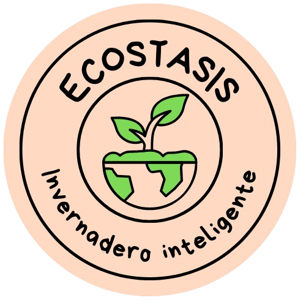
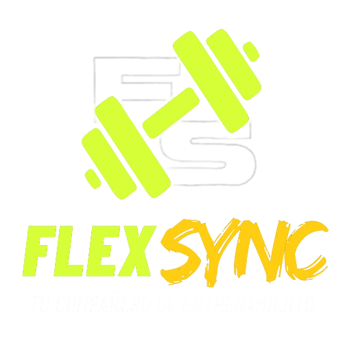

Alebrije MAX
Sistema POS integral para tablets. Sincroniza baristas y cocina en tiempo real, automatiza cortes de caja y gestiona tareas operativas.
Ver Demo👋 Buen día, soy Alexis Arriaga.
Ingeniero en Sistemas Computacionales | Desarrollador web | Enfoque Administrativo
Mi enfoque combina la ingeniería de software con una sólida comprensión de procesos administrativos y financieros. No solo escribo código; diseño herramientas que resuelven problemas reales de negocio y operación.
Me apasiona la tecnología emergente como el IoT y la Visión Artificial, pero mantengo los pies en la tierra utilizando herramientas de análisis de datos para medir resultados.
Soy Ingeniero en Sistemas Computacionales en constante evolución. Cuando no estoy programando, me encontrarás recargando energías
caminando al aire libre 🌳.
¡Ponte En Contacto!
Desarrollo de ecosistemas digitales que integran software, hardware y lógica de negocio.
Sistema POS integral para tablets. Sincroniza baristas y cocina en tiempo real, automatiza cortes de caja y gestiona tareas operativas.
Ver Demo
Invernadero biorrítmico automatizado. Ajusta microclimas según las 4 estaciones y gestiona ciclos de invernación mediante App Nativa.
Ver Ingeniería
Plataforma de entrenamiento híbrida. Corrección de postura mediante IA (Computer Vision) y marketplace social de rutinas.
ReconstrucciónUn conjunto de herramientas híbrido: Desarrollo Moderno, IoT y Análisis de Procesos.
Flutter (Dart), Kotlin (Android Nativo), React, JavaScript, HTML5/CSS3.
Excel Avanzado (VBA Macros), Power BI, SQL, Python (Pandas), Optimización de Flujos.
Arduino (C++), Sensores, TensorFlow Lite (Visión Artificial), Integración Hardware.
Git/GitHub, Docker, Supabase, Firebase, AWS (Servicios en la nube).
Compartiendo conocimiento y documentando el proceso de aprendizaje.
Comparto mi enfoque de diseño UX y lógica de programación en **TikTok**, simplificando conceptos para nuevos desarrolladores.
Ver TikTokAnálisis sobre escalabilidad y trade-offs en bases de datos (SQL vs NoSQL), utilizando ejemplos reales de mis proyectos.
Leer ArtículosEstudios de caso sobre cómo el diseño de interfaz mejora la toma de decisiones operativas en entornos de ritmo rápido.
Ver CasosSiempre listo para el próximo desafío.